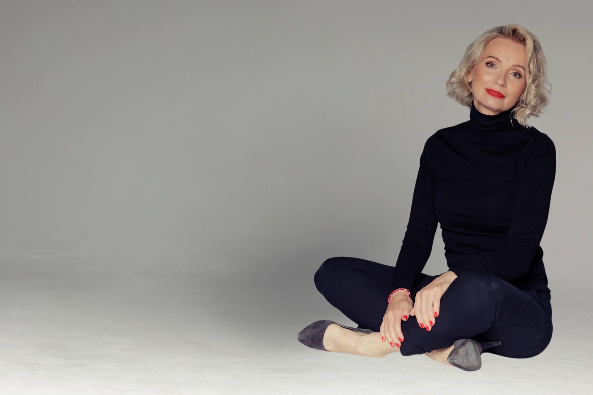

Doświadczenie
Moja droga
Droga ciekawości, odwagi i ciągłego rozwoju. Psychologia, biznes, dźwięk i praca z człowiekiem stały się moim sposobem na życie i misją.
Dowiedz się więcej o mniePomagam rozwijać odporność psychiczną, przywództwo, dobrostan i skuteczność w biznesie.
Psycholożka biznesu | Coachka | Trenerka | Terapeutka dźwiękiem
Największa zmiana zaczyna się od świadomości i decyzji, by działać.

Od blisko trzydziestu lat człowiek i relacje stanowią centrum mojej pracy. Wspieram liderów, menedżerów i zespoły w osiąganiu lepszych wyników, budowaniu odporności psychicznej i tworzeniu zdrowego środowiska pracy.
Łączę psychologię biznesu, coaching ICC, MTQ Plus, PRISM Brain Mapping i terapię dźwiękiem. Dzięki temu dobieram podejście do realnego celu, roli i kontekstu organizacji.
Droga ciekawości, odwagi i ciągłego rozwoju. Psychologia, biznes, dźwięk i praca z człowiekiem stały się moim sposobem na życie i misją.
Dowiedz się więcej o mnieTwoja droga do większej skuteczności, równowagi i satysfakcji — w pracy i w życiu. Towarzyszę Ci na każdym etapie tej zmiany.
Zobacz, jak mogę pomócPraktyczne szkolenia z przywództwa, komunikacji, odporności psychicznej i dobrostanu.
WięcejWsparcie w rozwoju kompetencji liderskich, podejmowaniu decyzji i budowaniu kultury pracy.
WięcejIndywidualny proces dla liderek i liderów, ukierunkowany na cele, zasoby i rozwój.
WięcejPraca z dźwiękiem dla redukcji stresu, regeneracji i harmonii ciała oraz umysłu.
WięcejDiagnoza i rozwój inteligencji mentalnej, odporności psychicznej i zasobów wewnętrznych.
WięcejMapa preferencji mózgowych wspierająca rozwój zachowań, potencjału i komunikacji.
WięcejZaawansowane narzędzie diagnozujące odporność psychiczną, motywację i gotowość do działania pod presją.
Narzędzie oparte na badaniach neurobiologicznych, które pokazuje, jak myślisz, uczysz się i działasz.
Programy rozwojowe dopasowane do celów biznesowych i kultury organizacyjnej.
Rozwój kompetencji przywódczych, podejmowania decyzji i zarządzania zmianą.
Lepsza komunikacja, współpraca i zaangażowanie — podstawa skuteczności zespołu.
Większa efektywność, mniejsza rotacja, lepsza atmosfera i realne wyniki biznesowe.
Wspólnie wybierzemy formę pracy najlepiej dopasowaną do celu, sytuacji i potrzeb.